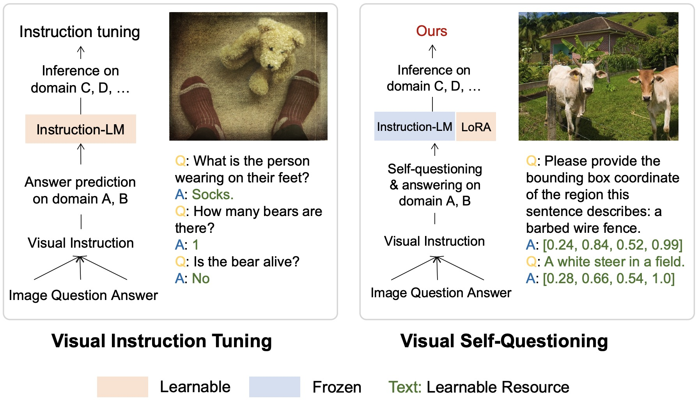
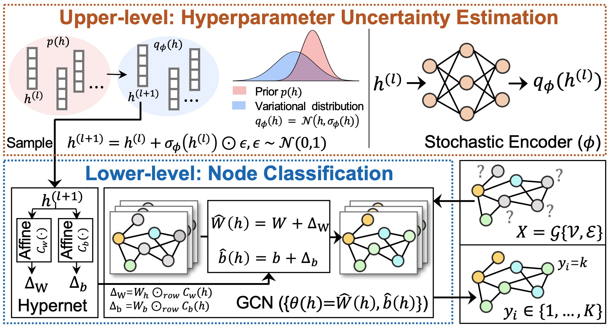

|
||||||
ResearchSome of our recent research interests are listed as follows.
| ||||||
Reliable Large Vision-Language Understanding We study the reliability and robustness of large language/multimodal models (LLM/LMM) and vision-language (VL) embeddings when applying these fundamental models in new domains. We investigate how to incorporate uncertainties into VL models and tasks, such as general purpose VL understanding, multi-round conversation, video/image-text retrieval, and implement new training insights to improve data efficiency for fine-tuning LLMs through visual instruction tuning, such as self-questioning that enables LLMs automatic in-context learning and visual discovery. The visual self-questioning applies to various LLM/LMM architectures, including Llama 3, Qwen2-VL, etc., and consistently improves the VL performance on 0.5B, 7B/8B, and 13B model sizes. We also apply our research in biomedical and healthcare applications. One of our recent works designs a new self-training LLaVA model (STLLaVA-Med) that is capable of learning to ask relevant medical questions and leveraging direct preference optimization (DPO) to enhance expert knowledge. Based on self-training, the model gets rid of large medical data pre-training and only requires a small amount of biomedical preference data labeled by closed-source LLM API (e.g., GPT-4o). Empirically, our model can be used in medical visual question answering, report generation, general medicine assistance, etc.
Uncertainty Quantification in Hybrid ModelsTo bridge the gap between lab simulation and real environments, we explore and model uncertainties for data-driven hybrid systems (e.g., physic-informed models, snapshot compressive imaging, etc.) at various levels by developing performance guarantees for co-optimized hardware and software and investigating scalable approximate inference techniques. We have built a new unified bilevel optimization framework through a Bayes lens to capture hardware, model, and data uncertainties in multiple complex systems, including hyperspectral imaging, video compression, and phase retrieval. One key insight of our proposed research is to parameterize hardware as hyperparameters – to realize co-optimization – and qualify its uncertainties through hyperparameter optimization techniques. 
Robust Sparse Network TrainingDeep neural networks, especially for low-level image restoration tasks, suffer from a high model complexity and cannot provide calibrated uncertainty estimates for safety-critical problems, such as medical imaging, remote sensing, navigation, etc. We aim to develop sparse network training algorithms to empower lightweight and trustworthy models. The key contribution of our research lies in improving the trainability of sparse subnetworks, especially in larger pruning ratios, and investigating the robustness of training sparse networks with random weight initialization to express and calibrate model uncertainty without sacrificing fidelity and inference efficiency.
Fair Ranking Systems Against Social BiasModern AI-powered search systems could make unfair decisions about demographic groups that infrequently appear in the training dataset. This data bias is usually induced by the skewed distribution of social-biased attributes (e.g., race, gender, and religion). Our research empirically studies various data bias issues and extensively designs mitigation methods to achieve fair ranking by meta-learning, curriculum learning, and prompt tuning.
|